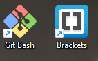
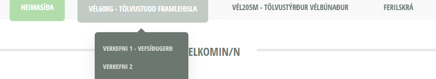
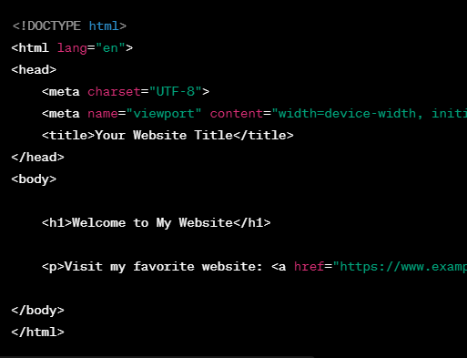
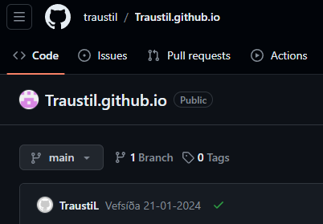

Hönnunarfasi vefsíðu
Góð undirbúningsvinna skiptir sköpum í verkefnum af öllum stærðargráðum og er þessi vefsíðuhönnun engin undantekning. Í upphafi þessa verkefnis hlóð ég niður öllum þeim búnaði/forritum sem gætu komið mér að góðum notum við hönnun á vefsíðu: Brackets til þess að forrita HTML vefsíðuna og Gitbash til þess að hlaða öllum gögnum upp á Github inn á rétta geymslu (e. repository).
 Þegar undirbúningsvinnunni var lokið var ekkert annað í stöðunni heldur en að hefja leit á HTML/CSS vefsíðu sniðmáti sem var snyrtilegt, einfalt og gæti hýst öll verkefnaskil fyrir bæði VÉL608G sem og VÉl205M. Á vefsíðunni þurfti ég einnig að geta gert greinarmun á báðum áföngum með "dropwown" valmynd og hafa lit á réttri valmynd til þess að einkenna á hvaða síðu notandi er á, sjá mynd hér að neðan.  Leitin að réttu sniðmáti var löng og erfið en ég leitaði á mörgum vefsíðum á borð við: Colorlib.com, tooplate.com o.flr sambærilegum en ákvað að lokum að taka einfaldlega sniðmát af vefsíðunni: html5up.com. Mér leyst vel á sniðmátið TXT þar sem það uppfyllti allar mínar hönnunarforsendur. Þau leitarorð sem ég notaði voru t.d. "Free html website template", "html and CSS website templates" og sambærilegt.forritun og uppsetning vefsíðu
Eftir að ég fann sniðmátið þá var ég pínu ráðavilltur hvernig ég ætti að vinna verkefnið og kynnast nýju forritunarmáli þ.e. HTML. Ég var hins vegar fljótur að koma mér upp á lagið með það og hófst handa við að hreinsa sniðmátið með því að eyða út óþarfa tökkum og óþarfa texta. Það tók hins vegar allra lengsta tímann að setja upp lendingarsíður fyrir allar millisíður beggja áfanga og láta allar síðurnar tengjast hvor annari. Eftir að allar síður tengdust eins og ég sá það fyrir mér hófst ég handa við að setja upp heimasíðuna og síðu fyrir ferilskránna mína. Til þess þurfti ég þó að komast að því hvernig hægt væri að setja myndir inn í HTML. Það var hins vegar einfalt þar sem ég fann einfaldlega staðsetningar innan sniðmátsins þar sem áttu að vera myndir fyrir og afritaði þann kóða. Ég var hins vegar fljótur að komast að því að eitthvað gruggugt var við allar myndirnar sem ég setti inn á vefsíðuna. Svo virtist vera eins sem kóðinn væri búinn að eiga við allar myndirnar með því að dreifa fullt af punktum yfir allar myndirnar. Eftir langa leit í gegnum CSS kóðann þá komst ég að því að sniðmátið breytti öllum myndum með því að bæta ofan á þær eftirfarandi yfirlagi
Eftir að þeirri skipun var eytt þá löguðust allar hinar myndirnar. Ég ákvað hins vegar að halda þessu yfirlagi á Valmyndinni hér efst á síðunni þar sem mér fannst það snyrtilegt og flott Næst setti ég upp síðu með ferilskránni minni en það var mjög einfalt þar sem ég einfaldlega setti inn mynd af núverandi ferilskrá. Við skrif á þessari færslu lenti ég þó í ýmsum vandræðum með HTML þar sem ég er að fikta með það í fyrsta sinn. Ég var því mjög duglegur að googla, fara inn á Stack overflow og nota ChatGPT til þess að læra hinar ýmsu skipanir innan HTMl. Ég til dæmis lét GPT kenna mér hvernig hægt er að setja inn stikluleggi (e. hyperlink), sjá eftirfarandi mynd

En Þetta einmitt hjálpaði mér mikið við það að læra á framendaforritun með HTML og CSS
Uppsetning vefsíðu á netið
Til þess að átta mig á því hvernig best væri að hlaða upp öllum skjölum vefsíðunnar þá horfði ég á seinni tvö kennslumyndböndin og las eftirfarandi leiðbeingingar sem ég fann á netinu Geeksforgeeks.com. Eftir lesturinn setti ég upp minn eigin github aðgang og stofnaði nýja geymslu sem hlaut nafnið traustil.github.io (Sjá Repository)

Eftir uppsetningu á geymslunni hófst ég handa við að koma öllum nauðsynlegum skjölum inn á hana. Það gerði ég einmitt með notkun á áðurnefndum leiðbeiningum. Fyrsta útgáfa síðunnar var tilraunarútgáfa sem innihélt ekki þessa málsgrein og lenti ég í vandræðum með að stofna síðuna þar sem leiðbeiningarnar í myndbandi fjögur frá Hafliða inniheldur úreltar stillingar. Eftir mikla leit fann ég hins vegar stillinguna sem ég þurfti að haka í til þess að stofna síðuna samkvæmt fyrrnefndu kennslumynd. Að lokum hófst ég handa við skrifvinnslu þessara síðustu efnisgreinar og hlóð síðan vefsíðunni aftur upp
Markmið áfangans
Markmiðin mín í áfanganum VÉL608G er að setja upp snyrtilega, flotta og nothæfa vefsíðu sem ég get notað þegar ég fer að sækja um vinnur sem nokkurs konar vinnuframlagsbók/ferilskrá. Ég er enn ekki alveg viss hvað lokaverkefnið mitt á að vera. Eins og er, er planið að komast aðeins inn í áfangan og sjá hvað er mögulegt að hanna/smíða.